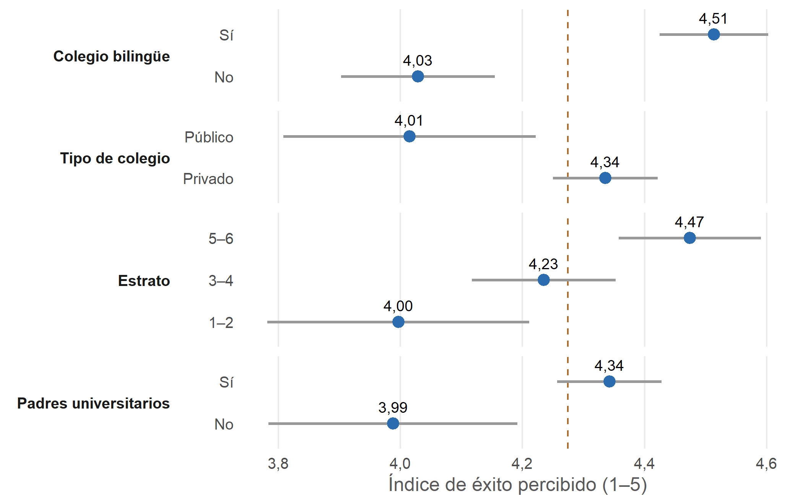

Capítulo 5 Comparación por grupos
Miradas por separado, las cuatro variables demográficas se asocian con el éxito percibido, y siempre en la misma dirección: los grupos con más recursos perciben más éxito.

Figura 5.1: Media del índice de éxito percibido por grupo, con intervalo de confianza del 95 %. La línea vertical es la media general.
| Variable | Grupos | Medias | % con índice ≥ 4 | Prueba | p | Tamaño del efecto |
|---|---|---|---|---|---|---|
| Colegio bilingüe | No / Sí | 4,03 / 4,51 | 59 % / 84 % | Mann-Whitney | < 0,001 | r = 0,36 |
| Padres universitarios | No / Sí | 3,99 / 4,34 | 58 % / 75 % | Mann-Whitney | 0,001 | r = 0,25 |
| Tipo de colegio | Público / Privado | 4,01 / 4,34 | 63 % / 74 % | Mann-Whitney | 0,002 | r = 0,24 |
| Estrato | 1–2 / 3–4 / 5–6 | 4,00 / 4,23 / 4,47 | 58 % / 71 % / 81 % | Kruskal-Wallis (6 niveles) | 0,003 | ε² = 0,037 |
| Educación de los padres | 5 niveles | 3,52 a 4,37 | Kruskal-Wallis | 0,013 | ε² = 0,025 | |
| Programa (control) | AE / NI / CP | 4,16 / 4,56 / 3,86 | Kruskal-Wallis | < 0,001 | ε² = 0,089 | |
| Género (control) | F / M | 4,33 / 4,21 | Kruskal-Wallis | 0,129 | ε² = 0,006 |
r = correlación biserial por rangos (positiva cuando el grupo con más recursos puntúa más alto). AE = Administración de Empresas, NI = Negocios Internacionales, CP = Contaduría Pública.
El colegio bilingüe tiene el efecto más grande de las cuatro variables demográficas. El programa tiene un efecto todavía mayor (ε² = 0,089), así que debe controlarse en cualquier modelo.